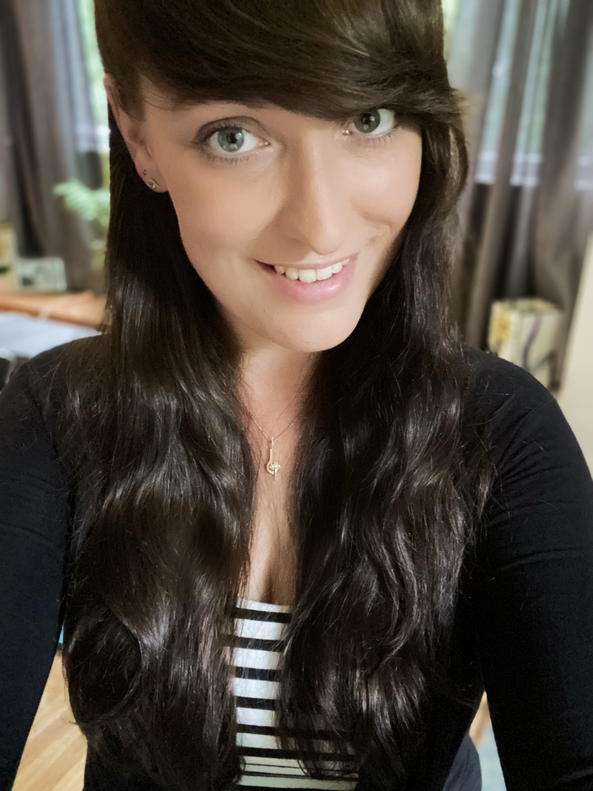

|  | Wie ben ik?Je kent het wel, je loopt met je camera door het bos en ziet vanalles om vast te leggen. Maar alle knopjes en instellingen op jouw camera maken je helemaal gek. Wat moet je kiezen? Hoe pak ik dit aan? Om met een dosis zelfvertrouwen op pad te gaan en jouw camera en jouw manier van fotograferen een enorme boost te geven ben je bij mij op het juiste adres! Toen ik 6 werd kreeg ik mijn eerste camera. Nog lekker met ouderwetse rolletjes. Mijn vader was dan ook altijd 'dolgelukkig' dat het volgende rolletje alweer vol zat. Weer een ritje naar de fotowinkel om ze af te laten drukken. Daarom ben ik 10 jaar geleden over gestapt op een spiegelreflex camera en echt professioneel gaan fotograferen. Inmiddels ben ik al een aantal jaren gespecialiseerd in Natuur en Wildlife Fotografie en ben ik IVN Natuurgids in opleiding. Wil jij meer leren over Natuur en Wildlife Fotografie? Of wil jij simpelweg jouw camera van de automatische stand kunnen halen? Dan ben jij hier aan het juist adres! Neem snel even een kijkje op mijn site en neem contact op als jij mee op pad wil! |
INES JONKERS FOTOGRAFIE